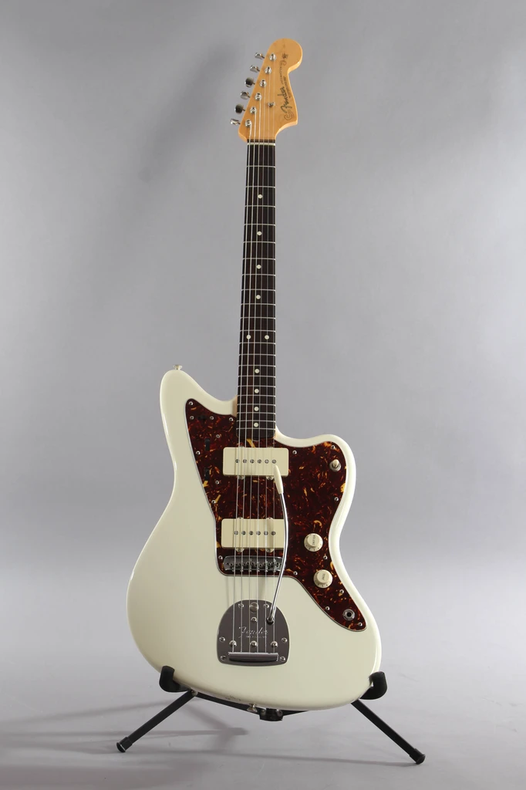
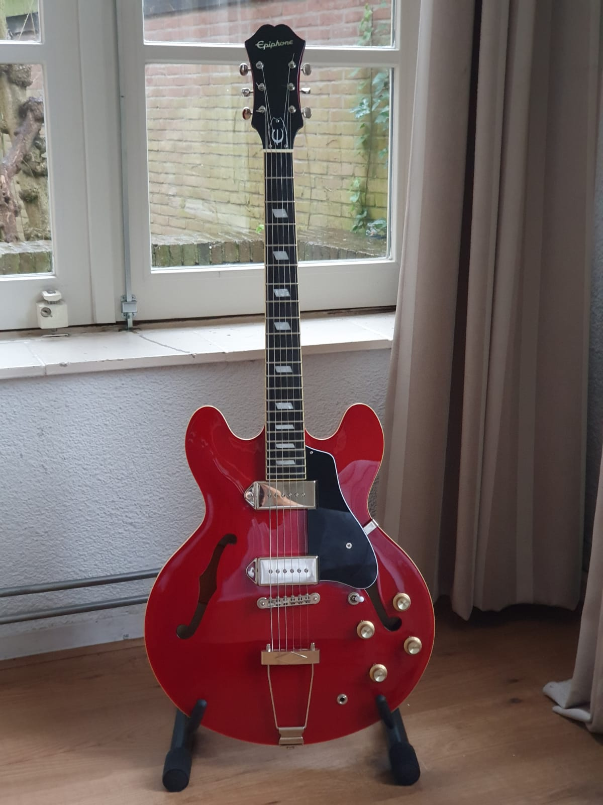
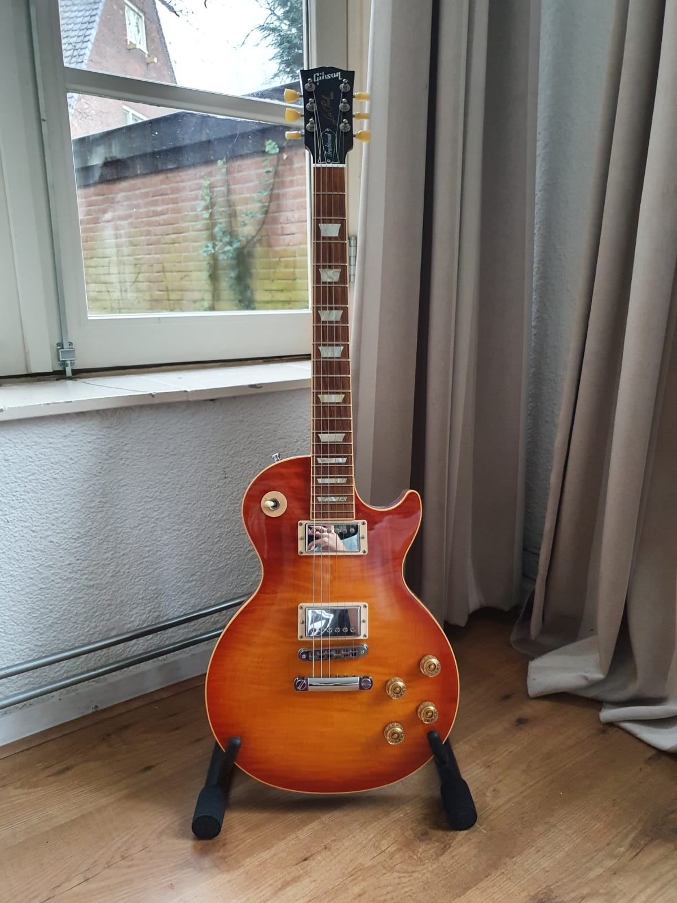
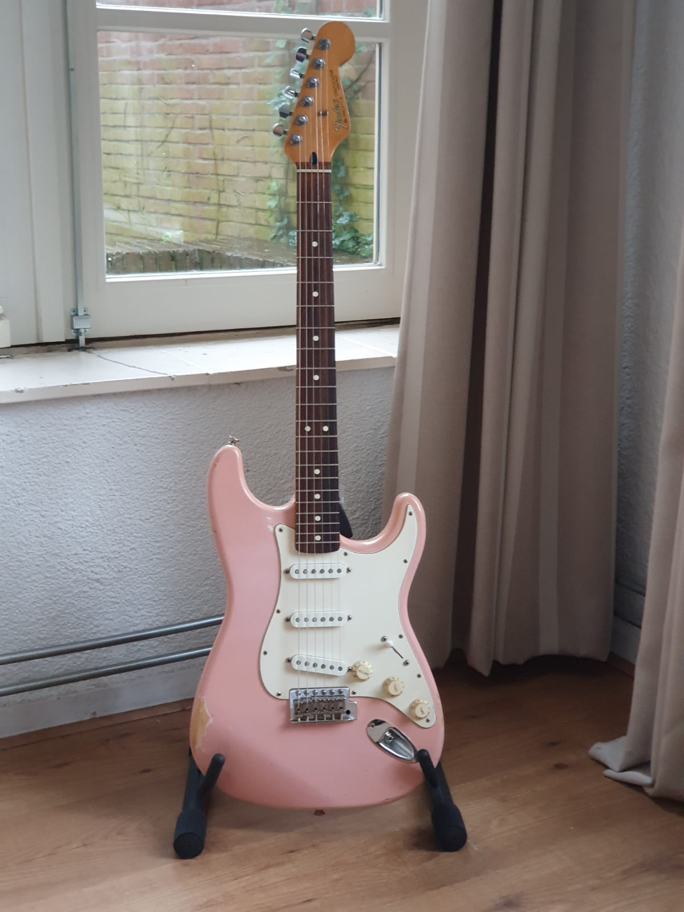

Producten
Over ons
Contact
Nieuws
Nieuw binnen

Fender American Vintage Reissue '62 Jazzmaster 2005
1500,-
Gibson ES335 Dot 2019 Bluesburst
2700,-
Fender standard Mexican Stratocaster candy apple red 2013
499,-

Epiphone Casino 2010
560,-

Gibson Les Paul Traditional
1700,-

Fender standard Mexican Stratocaster shell pink 1988
400